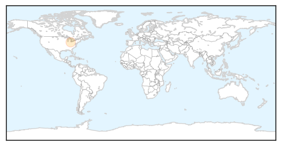

Mumps
30-Day Web Trend
0 alerts, 0 warnings

30-Day Twitter Trend
0 alerts, 0 warnings

Article Locations
Article Confidences

Top Articles:
Top Tweets:
-
No tweets found for Mar 07, 2015
Swine Flu
30-Day Web Trend
13 alerts, 7 warnings

30-Day Twitter Trend
2 alerts, 0 warnings

Article Locations

Article Confidences

Top Articles:
- 1.000
- Swine flu in India: Pakistanis warned against travelling to India
- 0.999
- Unprepared Sindh issues swine flu alert
- 0.999
- Swine flu in WB: H1N1 virus claims another life in Bengal
- 0.999
- Swine flu claims 30 more lives across India; over 24,000 affected
- 0.999
- IEDCR: Three infected with Swine Flu virus but no need for alarm
- 0.999
- H1N1 Swine Flu: Rights group warns Pakistanis against travelling to India
- 0.999
- Country is ready to tackle Swine Flu : IEDCR
- 0.999
- Sindh health dept cautions against Swine Flu -
- 0.996
- Rights group warns Pakistanis against travelling to India
- 0.996
- Swine flu Death toll Reaches 324 and 5,411 Cases
- 0.996
- Rights group warns Pakistanis against travelling to India
- 0.996
- Rights group warns Pakistanis against travelling to India
- 0.996
- Human Rights Organization in Pakistan Warns Pakistanis Not To Visit India
- 0.996
- Rights group warns Pakistanis against travelling to India
- 0.995
- First swine flu case confirmed in Manipur
- 0.994
- Rights group warns Pakistanis against travelling to India
- 0.993
- Rights group warns Pakistanis against travelling to India
- 0.993
- Rights group warns Pakistanis against travelling to India
- 0.993
- Swine flu alert
- 0.992
- Rights group warns Pakistanis against travelling to India
- 0.990
- Rights group warns Pakistanis against travelling to India
- 0.990
- 30 fresh deaths take swine flu toll to 1,319 in India
- 0.989
- Swine flu death toll reaches 332 in Gujarat
- 0.981
- Corporate India spreads awareness of Swine Flu epidemic
- 0.971
- Swine flu case suspected
- 0.960
- Kovai Woman Latest H1N1 Victim
- 0.953
- Make Tamil Nadu free from communicable diseases: Minister
- 0.945
- Swine flu claims another life in Bengal
- 0.938
- Swine flu: Gujarat has no plans to use CM relief fund
- 0.915
- Ahmedabad woman beats swine flu, delivers healthy baby
- 0.886
- Two die of swine flu in Himachal, toll now 13
- 0.797
- Patients treated for H1N1 incurring Rs. 3,500 per day
- 0.796
- Mulayam hospitalised, undergoes swine flu test
- 0.744
- Two die of swine flu in Himachal, toll now 13
- 0.664
- Mulayam Singh Yadav hospitalised, swine flu suspected
- 0.590
- Mob ransacks hospital after swine flu death in Bengaluru
- 0.585
- SP Supremo Mulayam Singh Hospitalised, Swine Flu Suspected
- 0.572
- Latest News & Gossip on Popular Trends at India.com
- 0.555
- Mulayam Singh Yadav down with swine flu, party says nothing to worry
- 0.553
- Mulayam admitted to hospital, Sonia wishes him quick recovery : India, News
- 0.550
- Mulayam in hospital with swine flu symptoms
Top Tweets:
-
No tweets found for Mar 07, 2015